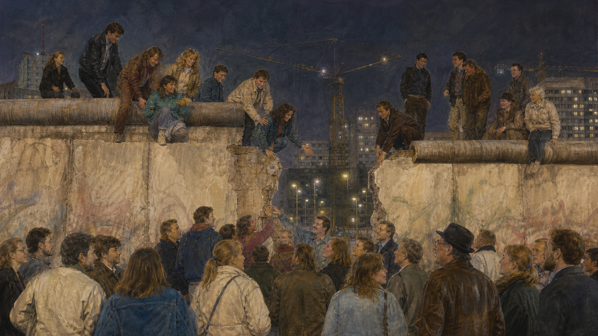

关键地点关系
1989年11月9日晚上，东柏林一间新闻发布厅里，政治局委员君特·沙博夫斯基从口袋里拿出一张纸。他宣布，东德公民可以申请前往国外。记者追问新规定何时生效。沙博夫斯基低头找了找，迟疑地说，据他所知，“立即，不延迟”。电视把这句话送进千家万户。成千上万人走向边境，问守卫：既然立即生效，为什么还不开门？守卫没有接到清楚命令。几个小时后，栏杆抬起，人群越过了那条曾经会让人中枪的线。
+ +
+一个口误，不能单独推倒一堵墙
后来的人喜欢把这晚讲成历史的玩笑：一位官员读错文件，柏林墙就倒了。口误确实关键，却只能点燃已经堆满的柴。此前几个月，匈牙利拆除与奥地利边境的铁丝网，数万东德人经匈牙利或西德驻外使馆离开；莱比锡等城市每周出现示威，参与者从数千增加到数十万；苏联领导人戈尔巴乔夫拒绝像过去那样用坦克替盟国镇压。
+ +东德领导层本想用较宽松的旅行规定缓解压力，并让申请经过行政程序。文件原计划稍后公布，边防部队也应先收到指示。沙博夫斯基没有参加相关会议，对细节并不熟悉。直播时代的奇特之处在此显现：政府内部以为自己仍掌握时钟，观众却把一句含糊回答当成已经生效的法律。
+博恩霍尔姆大街口岸的指挥官哈拉尔德·耶格尔不断打电话请示。上级既不愿授权开门，也没有明确命令开枪。人群越来越大，喊着“开门”。守卫先让少数人通过，后来为避免踩踏和冲突，在晚上十一点多放开栏杆。其他口岸跟随。没有一位最高领袖正式下令，却有许多普通人、记者和基层官员共同使旧命令失去效力。
+史料怎样读：谁“推倒”了墙？
官员笔记、电视录像、边防电话记录、示威者口述都是真实材料，却各自照亮不同因果。若只讲沙博夫斯基，公民抗议会消失；只讲英雄示威，又会忽略苏联政策、经济困境与基层守卫的选择。历史转折通常不是一个按钮，而是多条因果线在同一晚打结。
人们踏上西柏林街道，有人拥抱陌生人，有人领取西德发放的欢迎金，有人只是去看商店橱窗，然后又回家睡觉。他们当中不少人要求的是改革后的东德，而非立即统一。那晚打开的是旅行边界，不是未来答案。国家、货币、工厂、学校、养老金和秘密警察档案该怎么办，真正困难的问题才刚刚开始。
+为什么柏林会被切成一座孤岛
要理解这堵墙，必须回到1945年。纳粹德国战败后，美、英、法、苏四国分区占领德国；首都柏林虽然位于苏占区深处，也被分成四个占领区。最初这是一项共同管理战败国的安排，但战时联盟很快被资本主义西方与社会主义苏联的对立取代。德国不再只是一个被处置的国家，而成为两种制度相互展示、相互恐惧的前线。
+ +1948年，西方占领区推进货币改革，苏联封锁通往西柏林的陆路。西方以空运为城市供应煤和食品，近一年后封锁解除。1949年，西部成立德意志联邦共和国，东部成立德意志民主共和国。两个国家都声称代表德国的未来：西德建立议会民主和社会市场经济，东德在统一社会党领导下进行国有化和计划经济。
+边界并非从第一天就完全封死。1952年，东德加强德国内部边界，但柏林仍相对可通行。人们可以住在东边、到西边工作，探亲、购物或永久离开。到1961年，约有二百七十多万人从东德迁往西方，其中许多是医生、工程师、教师和年轻技术人员。对个人，这是用脚选择生活；对东德政府，这是人才和合法性不断流失。
+西方把离开者视为制度投票，东德则称西方以高工资“挖人”，并担心国家经济被抽空。两种说法都包含事实，也都服务于政治叙事。若没有东西方发展差距和政治压制，大规模外流难以解释；若忽略战争破坏、赔偿负担与冷战竞争，也会把东德困境简单说成民族性格或个人无能。
+一个星期天，街道变成国界
1961年8月13日凌晨，东德警察和工人沿西柏林边界铺开铁丝网，掀起路面，封闭车站。居民醒来时，熟悉的街道已经不能穿过。伯瑙尔大街出现最刺痛的场景：房屋正面朝西柏林，人行道却在西边；住户从窗户跳下，有人被消防队接住，也有人坠落身亡。后来窗户被砖封，房屋被拆，空地变成更宽的边境带。
+ +东德称它为“反法西斯防卫墙”，声称要阻止西方间谍和破坏者；西方则称它是监狱围墙，因为防御设施主要阻止东边居民出去。官方措辞揭示立场，却不能取代观察方向：地雷、警犬和射击命令面向试图离境者，逃亡者承担致命风险。墙确实稳定了东德劳动力，也以剥夺自由迁徙为代价。
+家庭在一夜间分开，通勤者失去工作，地铁线路被截断。西柏林列车穿过东部时，有些车站不停靠，昏暗站台上只有武装守卫，被称为“幽灵车站”。边界并非抽象国际政治，而是奶奶无法参加婚礼、孩子看不见另一边的父亲、窗外的邻居突然成为外国人。
+此后仍有人挖隧道、藏在汽车夹层、乘自制热气球或游泳逃离；也有人在边境被捕或死亡。具体死亡人数因统计范围不同而有差异，柏林墙纪念基金会确认至少140人在柏林墙相关情境中死亡。数字必须谨慎，因为有人直接遭枪击，有人溺亡或在检查站心脏病发，研究者要说明是否都计入。
+父子暂停一下
国家能否以“阻止人才流失”和“保护社会制度”为由限制公民离开？如果多数人离开会使留下者生活更糟，个人仍应拥有无条件离开的权利吗？
墙两边不只是黑白照片
冷战宣传把两边生活画得极端清楚：西方海报里，东德只有灰暗、短缺和秘密警察；东德课本里，西方充满失业、资本剥削和法西斯复活。普通人的生活却不会完全服从海报。西德经济高速增长，消费品丰富、旅行自由，民主制度也逐渐稳固；但住房、代际冲突和纳粹责任并未自动消失。
+东德提供普遍就业、托儿服务、教育和相对低廉的住房，女性劳动参与率很高，许多人对同事、幼儿园和社区保有温暖记忆。与此同时，商品选择有限，住房等待漫长，公开反对执政党可能失去升学或工作机会。国家安全部“斯塔西”建立庞大的监控网络，正式人员与非正式合作者记录谈话、信件和私人关系。
+ +有人真诚信仰社会主义，认为东德反法西斯、重平等；有人表面顺从、私下讲笑话；有人申请离境；更多人学会在家庭、单位和公共场合使用不同语言。不能因为国家后来失败，就说所有居民一直等待西方拯救；也不能因为生活中有友谊和安全感，就淡化不能自由选择政府和离境的事实。
+制度的支持者
他们强调全民就业、教育机会、托育与较小收入差距，认为统一让社会保障和共同体迅速贬值。
制度的反对者
他们强调选举不自由、审查、监控与边境死亡，认为社会福利不能交换基本权利。
历史教育最难的，是允许同一位老人说出两句都真实的话：“我们的幼儿园很好”和“我害怕邻居告密”。制度评价不能靠一段幸福童年否定档案，也不能靠一份监控文件抹去全部人生。墙不仅分开地理，也制造两套词汇；统一之后，人们还要学习听懂对方如何讲述自己。
+当人群发现政府也会退
1980年代，东德表面稳定，经济却依赖西方贷款，设备老化，环境污染严重。苏联的改革与开放让比较更尖锐：如果莫斯科都允许讨论错误，东柏林为何仍拒绝？教会为和平、环保和人权团体提供相对安全的空间。西德电视越过边界，把外部生活和国内抗议带进客厅。
+1989年5月，匈牙利开始拆除边境设施。夏天，东德游客涌入匈牙利，等待前往奥地利；布拉格和华沙的西德使馆院子挤满要求离境者。政府陷入两难：放人会鼓励更多人，强行阻挡又会制造国际危机。9月，莱比锡星期一祈祷后的游行不断扩大，“我们要出去”的口号渐渐变成“我们是人民”。
+ +10月9日，约七万人在莱比锡示威。医院准备收治伤员，安全力量已集结，人们记得北京数月前的武力镇压，谁也不知道会发生什么。地方名人和党内干部呼吁克制，最终没有大规模开枪。恐惧的方向由此改变：示威者发现人数可以保护彼此，官员则发现命令未必会被执行。
+几天后，执政多年的昂纳克被撤换，新领导仍无法恢复信任。11月4日，东柏林亚历山大广场举行巨型示威，演员、作家、工人和改革派党员公开发言。人们要求言论自由和真正选举。五天后的新闻发布会之所以有爆炸力，正因为国家垄断的信息、边境和恐惧已经逐一松动。
+十一月的欢呼，十月的国家
边境开放后，变化快得让改革派来不及设计“第三条道路”。东德第一次自由的人民议会选举在1990年3月举行，主张迅速统一的联盟获胜。选民的选择包含自由愿望，也包含实际焦虑：东德货币失去信心，企业订单崩落，人口继续西迁。许多人相信，越快引入西德马克和西德制度，生活越快稳定。
+ +7月1日，货币、经济和社会联盟生效，东德工资、养老金和部分储蓄按政治决定的比例兑换成强势西德马克。这给家庭安全感，却让许多东德企业的成本突然上升、产品难以竞争。国有企业由信托局负责私有化、出售或关闭。统一账本上，一边是稳定货币和现代基础设施，另一边是短期内大规模失业与工业瓦解。
+外部问题同样棘手。二战四个占领国仍保有对德国整体和柏林的权利；波兰担心统一德国重新争论奥得河—尼斯河边界；苏联担心北约向东。两德与美、苏、英、法进行“二加四”谈判，确认德国边界、限制军力并终止四国权利。统一德国留在北约，苏军则在数年内撤出东部。
+1990年10月3日，黑红金旗升起，法律意义上的统一完成。可法律能在午夜切换，社会不能。教师突然面对新课程，法官学习新法，工厂工人等待收购决定，军人不知资历是否被承认，房屋产权被战前所有者或继承人追索。每一项制度统一，都可能给一人恢复权利，却让另一人失去确定生活。
+父子暂停一下
如果一种货币更稳定，却会使本地工厂突然失去竞争力，你会选择快速兑换还是缓慢过渡？政治自由与经济震荡同时到来时，人们会把痛苦归因于谁？
同样的护照，不同的履历
统一后，联邦政府向东部投入巨额资金，修复道路、铁路、通信和城市中心。许多历史建筑重获光彩，环境污染下降，养老金和公共服务按联邦标准重建。年轻人可以自由旅行、求学和创业。这些改变真实而巨大，不能因问题持续就说统一失败。
+但东部经济转型速度也极其猛烈。工厂关闭后，工作的失去不仅是收入问题，也使工程师、工人和社区过去的技能被宣布“不再有价值”。数以百万计的年轻人前往西部，留下老龄化城镇。西部经理、官员和教授大量进入东部领导岗位，很多东部人感觉自己不是共同建设新国家，而是被一套成功制度接管。
+ +斯塔西档案开放带来另一场家庭地震。公民可以查看自己被监控的记录，有人发现朋友、同事甚至亲属曾提供消息。开放档案保障知情与追责，却也迫使人们面对合作的灰色地带：有人因信念告密，有人受威胁，有人只交付琐碎信息，有人毁掉了别人的人生。司法必须区分责任，社会记忆却没有统一判决。
+“胜利者写历史”的感觉影响政治。若西部人只说“我们给了你们自由和金钱”，便忽略东德人自己发动和平革命，也忽略他们失去的社会网络；若东部怀旧把统一前描绘成安全乐园，又会伤害受迫害者。共同国家需要一种更宽的语言：既承认统一完成了自由权利，也承认转型成本分配不均。
+纪念一堵墙，也是在选择看见谁
今天走在柏林，墙的大部分已经消失。地面上的双排石块标出旧边界，东边画廊保存彩绘墙段，查理检查站挤满游客和纪念品。若只剩可以自拍的彩色背景，墙会被消费成冷战布景；若把每一位东德居民都写成受害者，又会抹去他们不同的选择和能动性。
+柏林墙纪念馆保留一段完整边境系统、和解教堂遗址与遇难者窗口。这样的空间不只展示物件，也安排观看顺序：先见街道和家庭，再见国家命令；先读个人姓名，再看宏观数字。纪念馆提醒参观者，墙不是两块混凝土，而是一套把逃离意愿转化为犯罪的制度。
+ +西柏林也不是无辜旁观台。它被西方当作自由橱窗，获得补贴与特殊待遇，也处在核战争前线。1961年西方没有为阻止建墙发动战争，因为领导人判断核对抗代价太高。肯尼迪后来表达声援，却接受墙比战争更可控的现实。对被困者而言，这种克制残酷；对全世界而言，它可能避免灾难。
+自由的纪念
墙倒塌证明公民和平抗议可以使高压制度失效，边界不应囚禁人民。
和平的警告
冷战秩序也靠相互克制维持。道德上不可接受的墙，曾被大国视作比直接战争较小的恶。
两种记忆都不舒服，却共同构成历史。纪念墙的受害者，不必赞美冷战军事对峙；理解领导人避免战争，也不必接受墙的正当性。成熟的记忆不是挑一幅最令人安心的照片，而是让自由、安全、责任与代价同时留在画面里。
+墙倒以后，边界还会长在心里
截至2026年8月，德国统一已超过三十五年。柏林是统一国家的首都，东部城市面貌与1990年相比发生巨大变化；但地区收入、财富积累、企业总部和精英职位代表性仍不完全相同，东部一些地区的人口流失与政治不信任也更突出。变化中的指标必须按年份与口径阅读，不能把“仍有差距”说成“毫无进步”。
+ +柏林墙故事常被用来证明某种制度“最终必胜”。但1989年的人群并不知道终点，和平结果也不是必然。若守卫开枪、苏军干预、示威者报复，历史会完全不同。结果之所以值得珍惜，恰因为许多人选择不把恐惧转成暴力，也因为国际谈判把邻国安全纳入统一安排。
+统一真正困难之处，是承认自由不仅是打开门，也是让穿过门的人有能力在新社会被尊重。法律平等若伴随长期的履历贬值，便会留下羞辱；保存旧生活记忆若不承认受害者，又会把怀旧变成遗忘。国家共同体不是删除两个过去，而是建立一个能容纳冲突记忆的公共空间。
+那晚在博恩霍尔姆大街，守卫抬起栏杆时没有奏响结局音乐。有人向西走，有人很快回到东边，有人多年后仍说自己先是东德人。墙的开放结束了一个命令，却没有结束历史。真正的统一从第二天早晨开始：当陌生制度进入厨房、工厂和学校，人们必须学会在同一张桌上解释彼此失去过什么。
+关灯前，聊六个没有标准答案的问题
+-
+
- 柏林墙开放应主要归功于示威者、苏联改革、东德官员失误，还是长期经济压力？ +
- 如果快速统一能保障政治自由，却造成大规模失业，是否仍应越快越好？ +
- 一个人怀念旧制度下的童年，是否会削弱他对旧制度压迫的批判？ +
- 秘密警察档案应完全公开，还是要保护告密者与被记录者的隐私？ +
- 西方接受柏林墙以避免战争，是负责任的克制，还是对墙内居民的放弃？ +
- 怎样判断两个地区已经真正“统一”：看法律、工资、人口流动，还是彼此尊重？ +
继续追索：档案与可靠来源
+-
+
- 柏林墙纪念基金会——边境设施、遇难者研究、口述史与纪念空间。 +
- Chronicle of the Wall——由德国公共机构合作建设的逐年档案。 +
- 德国历史博物馆基金会：German Unity——从1989革命到统一的文件与时间线。 +
- 德国联邦档案馆：德国统一专题——政府与社会原始档案入口。 +
- 德国联邦政府：German Unity——统一进程及年度状况报告。 +
- 美国国务院历史办公室：东欧共产主义政权终结——外交背景与美国档案视角。 +
- 北约解密档案：Fall of the Berlin Wall——联盟视角的冷战文件。 +
- 德国联邦银行：货币、经济与社会联盟三十年——1990年货币转换背景。 +
- 德国统一社会党专政反思基金会——东德历史、教育材料与研究数据库。 +
- 斯塔西档案馆——监控档案的保存、开放和研究说明。 +